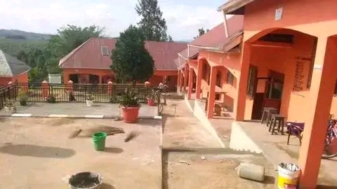

St. Charles Kitagata SS is committed to providing quality education and a nurturing environment where students can grow academically, socially, and morally. Our goal is to prepare students for success in life and service to the community.

St. Charles Kitagata Secondary School was founded in [2015] with the aim of providing quality education to students in the surrounding community. The school began with a small number of students and a few dedicated teachers who were committed to academic excellence and discipline.Over the years, the school has grown both in population and infrastructure. New classrooms, laboratories, and dormitories have been constructed to support the increasing number of learners. The school has also consistently performed well in national examinations.
St. Charles Kitagata SS is known for nurturing students in academics, sports, and moral values. It continues to uphold its mission of producing responsible and successful citizens.
Today, the school stands as one of the respected institutions in the region, offering a conducive environment for learning and personal development.
Mission: To provide quality education, nurture talents, and instill discipline and moral values in students.
Vision: To be a leading secondary school recognized for academic excellence, character formation, and holistic development.
Address: Kitagata, [Mbarara], Uganda
Phone: +256 772564072
Email: info@stcharleskitagata.ac.ug
Welcome to St. Charles Kitagata Secondary School. It is my pleasure to warmly welcome you to our school community, where we are committed to excellence in both academics and character development.
At St. Charles Kitagata SS, we believe that education is the foundation for a successful future. Our dedicated staff work tirelessly to provide a supportive and inspiring learning environment that nurtures students’ talents, discipline, and leadership skills.
We encourage our students to aim high, work hard, and uphold strong moral values. Together with parents and the community, we strive to shape responsible and productive citizens.
I invite you to explore our website and learn more about the opportunities we offer. Thank you for being part of our journey.
Headteacher
St. Charles Kitagata Secondary School
St. Charles Kitagata Secondary School is located in Macuro ward,Nyarubungo II, Mbarara city south division in Western Uganda. The school is easily accessible and provides a peaceful environment suitable for learning.